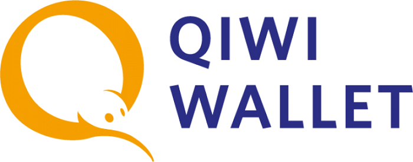

|
Правила игры
Футбольный менеджер Забей является онлайн-игрой. Основной момент, то, что отличает нас от большинства проектов в сети - полнейший реализм. Это реализм во всём: футбольный лиги, команды, игроки, тренеры, параметры, возможности и многое другое. Игра построена на концепции того, что всё в нашем мире зависимо: от людей, от стихии, от судьбы наконец. Все закономерности, происходящие в реальной жизни, тем или иным способом отражаются на нашем её восприятии. Поэтому, основным направлением, принимаемым командой разработчиков, во время создания проекта было проведение грамотного и правильного объединения всех аспектов футбольной жизни в одно целое. Это необходимо для того, чтобы создать настоящий симмулятор футбольного менеджмента и футбольной жизни. Именно таким продуктом и является онлайн-проект Забей
Основные положения
1. Типы пользователей
На данный момент в игре доступно 2 типа пользователей: Администратор проекта и Менеджер.
Цель Менеджера проекта - добиваться успеха. После регистрации Менеджер имеет право получить в управление команду и работать с ней по всем направлениям: от формирования состава, до проведения трансферной и финансовой политики.
Цель Администратора проекта - помочь менеджерам добиваться истинных целей игры - стать профессионалом! Администратор проекта ведёт учёт соблюдения правил, разрабатывает и дорабатывает программное обеспечение.
2. Возможности
Любой зарегистрированный в установленном порядке менеджер имеет право получить свободный клуб. Функции управления клубом включают в себя:
- управление и формирование состава
- проведения финансовой политики
- проведение трансферной политики
- строительство и усовершенствование инфраструктуры
Кроме этого, любой менеджер имеет право вступать в переписку с другими менеджерам и Администратором проекта. Для данной возможности реализовано следующее:
- наличие форума
- наличие новостей на главной странице
- наличие персональной стены сообщений
Администратор проекта имеет право блокировать доступ к Сервису, в случае нарушения менеджером хотябы одного из пунктов правил, перечисленных в п.3
3. На сайте запрещено
- управление одним человеком более чем одним аккаунтом - умышленное нарушение работоспособности сайта (атаки на сайт, попытки взлома и т.д)
- оскорбление, флуд, угрозы и другие действия, направленные на подрыв репутации проекта
- действия, направленные на то, чтобы помешать другим Менеджерам принимать участие в игре
- действия, приведшие к сдаче матча
- несанкционированная распродажа футболистов во время проведения трансферного окна
- покупка, продажа, перепродажа футбольных клубов, без ведома и разрешения администрации
- совершение иных махинаций, не оговоренных в данном списке, но нарушающих функциональное состояние сайта, либо преграждающее другим Менеджерам принимать участие в игре
- Систематическое использование багов проекта в своих целях
- Один менеджер не может управлять двумя и более клубами из одного чемпионата
- Передача команды во временное пользование другому менеджеру
В случае, если менеджер признал свою вину и желает продолжить участие на проекте, ему необходимо оплатить штраф в размере:
1-ый бан - 60 ZB
2-ой бан - 90 ZB
3-ий бан - 180 ZB
Все полученные таким путём деньги пойдут на нужды проекта.
4. Действия Администратора
Администратор вправе заблокировать Менеджеру доступ к сайту при нарушении любого из вышеперечисленных правил. Срок блокировки аккаунта - на усмотрение принявшей стороны. Администратор имеет право указать нарушившему правила Менеджеру на нарушение, однако может этим правилом пользоваться. Менеджер может подать аппеляцию на действия Администратора.
Администрация имеет право увольнять менеджеров с клубов при отсутствии менеджера на проекте сроком: 2 недели, если менеджер не поставил в известность администрацию, что по какой-то причине может отсутствовать на проекте дольше указанного срока.
5. Игровые моменты
Игровая модель проекта состоит из цепочки:
Континенты - Страны - Лиги - Команды - Персоналии - Параметры
Каждый вышестоящий элемент состоит из совокупности значение нижестоящего.
- Континенты - на проекте реализованы все континенты планеты Земля
- Страны - на данный момент реализованы все независимые страны, входящие во все континенты
- Лиги - постоянно дорабатываемые и создаваемые реально существующие фубольные лиги
- Команды - создаваемые ячейки, состоящие из футболистов, тренеров, юниоров.
Существует несколько видов команд: национальные сборные, клубы, резервные команды. Каждую из команд может всзять под своё управление менеджер и работать с ней с пормощью доступных опций.
Каждая команда имеет свою клубную базу, состоящую из стадиона и инфраструктуры.
Различные сооружения позволяют в зависимости от своего профиля влиять на игровой процесс. Так, например, больница придаёт опции контроливать ход восстановительного процесса в клуба; скаут-центр позволяет следить за игроками и получать достверную информацию об их текущих кондициях.
Стоит отметить так называемые; молодёжные лагеря, которые являются сооружениями в других городах, позволяющими иметь доступ к молодёжи, вырасшей там.
- Персоналии - создаваемые объекты, составляющие команды.
Персоналии могут быть трёх типов: футболист, тренер и юниор. Каждый из типов персоналий имеет свои особенности развития, а также возможности.
Каждый футболист имеет совокупность навыков, которые оценивают его способности (п.7). Кроме В зависимости от позиции на поле, необходимо прокачивать определённые навыки. Каждый менеджер для себя решает, какой навык прокачать футболисту, следовательно каждый Менеджер имеет возможность выращивать своих звёзд со своими персональными особенностями. Кроме этого футболисты имеют показатель, называемый; Возможности игрока, выше которых, увы, он не прыгнет на голову. Возможности игрока являются так называемым; потолком, достигая который футболист уже не будет сильно прогрессировать. Каждый футболист имеет характер, который играет роль в жизни футболиста, а также во взаимодействии футболиста с клубом.
Тренера - это служба клуба. Они имеют возможность изучать игроков, готовить отчёт о предстоящих соперниках, советовать Менеджеру относительно приобретения того или иного игрока. Тренера влияют на прокачку футболистов, помогая им быстрей осваивать новые знания и умения.
Юниоры - это будущее клуба. Юниоры - реально существующие персоналии, проживающие до определённого возраста в городах и принадлежащие своим клубам. Факт проживания юниора в городе означает потенциальную возможность переманивания игрока из одной команды, в другую. Необходимо следить за присутствием других клубов в данном городе, чтобы не отпустить талантливого юниора.
6. Позиции
Каждый футболист, тренер и юниор принадлежит к определённой позиции.
Позиции тренеров:
- тренер вратарей
- тренер защиты
- тренер полузащиты
- тренер атаки
Тренер определённой позиции влияет на прокачку игроков, а также на предоставляемые им данные.
Позиции футболистов и юниоров:
- GK - вратарь
- LB - левый защитник
- RB - правый защитник
- CD - центральный защитник, стоппер
- DM - опорный полузащитник
- LM - левый полузащитник
- RM - правый полузащитник
- CM - центральный полузащитник
- AM - атакующий полузащитник
- LW - левый вингер, нападающий
- RW - правый винген, нападающий
- ST - центральный нападающий, страйкер
Каждая позиция игрока позволяет ему выступать на опле под указанной позицией под определённым уровнем. Уровень футболиста в таком случае зависит от уникального для позиции набора параметров (п.7)
7. Параметры
Существует несколько видов параметров, каждый из которых в зависимоит от позиции влияет на прокачку и общий уровень игрока.
Параметры полевых игроков:
- Лидерство - возможность игрока влиять на своих партнёров
- Агрессия - грубость на поле
- Командная игра - способность и возможность игрока играть в командую игру
- Скорость
- Ускорение
- Сила - способность переносить усиленные нагрузки во время напряжённого графика
- Ловкость - способность переносить травмы
- Сила удара
- Дальние удары
- Дриблинг
- Техника
- Навесы
- Креативность - способность игрока придумывать оригинальные решения на поле
- Завершение атаки - способность футболиста завершать атаку голом
- Передачи
- Отбор
- Опека - контроль за соперником, перемещение за ним по полю
- Игра головой
Параметры вратарей:
- Лидерство - возможность игрока влиять на своих партнёров
- Аггрессия - грубость на поле
- Командная игра - способность и возможность игрока играть в командую игру
- Скорость
- Ускорение
- Сила - способность переносить усиленные нагрузки во время напряжённого графика
- Ввод мяча
- Дальность ввода
- Игра руками
- Игра кулаками
- Игра на выходе
- Игра ногами
- Реакция
- Игра на вынос - способность вратаря играть на вынос, не задерживая мяч в штрафной зоне
- Первый пас - способность первой передачи защитнику
- Грубость - грубое, некорректное отношение
- Пенальти - способность отражать удары пенальти
- Игра в воздухе - способность ловить мяч, летящий в воздухе
8. Платные функции
Под платными функциями на проекте Забей понимаются VIP; VIP аккаунт; (далее VIP). VIP позволяет Менеджеру получать дополнительные возможности, опции, улучшающие интерфейс, игровой процесс с помощью добавления опций управления. Перечень опций управления не является строго фиксированным, он постоянно обновляется, в него добавляются новые формы. Таким образом, Администратор старается заинтересовать Менеджеров и улучшить качество их услуг.
Доступные опции VIP перечислены в разделе; Кабинет - Дополнительные опции.
Стоимость VIP устанавливается Администратором и перечислена в разделе; Кабинет - Оплатить.
На проекте Забей есть внутренняя валюта - ZB. Курс на неё фиксирован и составляет:
1ZB =1 доллар США
Для того, чтобы пополнить счет (купить валюту zb) можно воспользоваться следующими способами:
- Перевод на кошелек WebMoney;
- Карта ПриватБанка(при пополнение через карту ПриватБанк обязательно сохранить чек и отправить Администрации);
- Qiwi Wallet;
- Яндекс.Деньги.
Z312653633087 - доллар
E373872365005 - евро
R355807189922 - российский рубль
U313016408744 - гривна
B826112123331 - белорусский рубль
+380 66 031 93 15
Если у Вас возникли вопросы с пополнением, просьба обращаться к Администратору Ambassador.
|